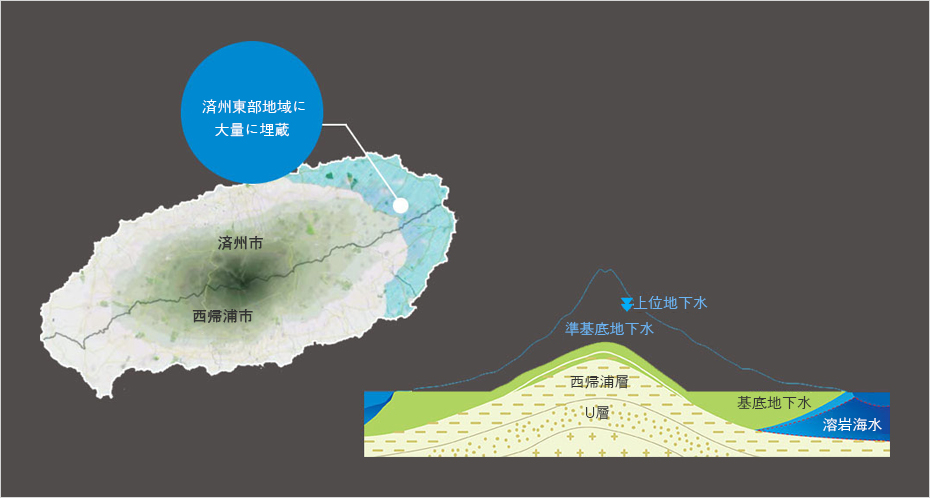

（特化団地）溶岩海水団地
- Home
- 投資環境
- 投資立地
- （特化団地）溶岩海水団地
済州溶岩海水団地 (Lava Seawater Industrial Complex)
団地の構成
-
1溶岩海水センター
- インフラ支援、産学協力ネットワークの構築、技術開発及び広報・マーケティング支援
-
2教育研究及び展示施設
- 溶岩海水及び活用製品に対する広報及び展示、販売、教育空間
-
3スパ施設(タラソテラピー)
- 海洋療法による治療及び休養施設で、観光産業と連携
-
4飲料製造業
- 溶岩海水を活用して「飲む塩地下水」及び機能性飲料を生産
-
5食料品製造業
- 溶岩海水を活用した食料品の生産(塩干品、機能性食品など)
-
6香粧品及び機能性製品製造業
- 溶岩海水を活用した香粧品及び機能性製品の生産
溶岩海水とは？
太古の済州の海が作り出したきれいで澄んだ水
溶岩海水はミネラルと栄養塩類が非常に豊富であるだけでなく、有機物及び病原菌がほとんどない済州だけの独特の地下水資源です。 済州島の誕生と溶岩海水の生成
溶岩海水とは?
海水が火山岩盤層により自然にろ過されて、陸地の地下に染み込んだ水で、ミネラルと栄養塩類が非常に豊富であるだけでなく、有機物及び病原菌がほとんどない済州だけの地下水資源です。
溶岩海水と海洋深層水
海洋深層水は、水深200メートル以上の深い海底から取水するので取水配管の設置及び管理費用が高くなります。
一方、溶岩海水は陸地部で取水するので比較的少ない費用で開発が可能であり、火山岩盤層に由来するミネラル成分を多様な分野に活用することができます。
一方、溶岩海水は陸地部で取水するので比較的少ない費用で開発が可能であり、火山岩盤層に由来するミネラル成分を多様な分野に活用することができます。

溶岩海水の生成&分布
済州の東部地域は海水の透過に適した火山岩盤層が分布しており、溶岩海水は主に済州東部地域に大量に埋蔵されています。



産業的活用
溶岩海水を活用した済州型創造産業の育成
天然のカルシウム、マグネシウムなどの有用なミネラルが入っている溶岩海水は機能性飲料と化粧品など多様な製品群の高付加価値化を図ることができます。-
飲料
- 飲む塩地下水、機能性飲料
- 地域特産品と連携した混合飲料
- ミネラルを原料としたイオン飲料
-
化粧品
- 皮膚再生/機能性ローション、クリーム、ジェル
- 入浴剤及びスパ用製品
- 洗浄剤(石鹸、シャンプーなど)
-
食品
- カルシウム、マグネシウムサプリメントなど機能性食品
- 豆腐、ヨーグルトなど発酵飲料
- 脱塩水/濃縮水を利用した食品ソース
- 酒類(伝統酒、焼酎、ビール)
-
原料
- 観光産業及び体験教育
- エコ果樹及び野菜の栽培
- 高付加価値海洋生物の培養
団地入居関連のお問い合わせ
- 住所 : 済州特別自治道 済州市旧左邑漢東里2972-1番地一帯
- 代表番号 : 064-720-3092
- FAX : 064-784-1715
- ホームページ : http://www.jejulavawater.com